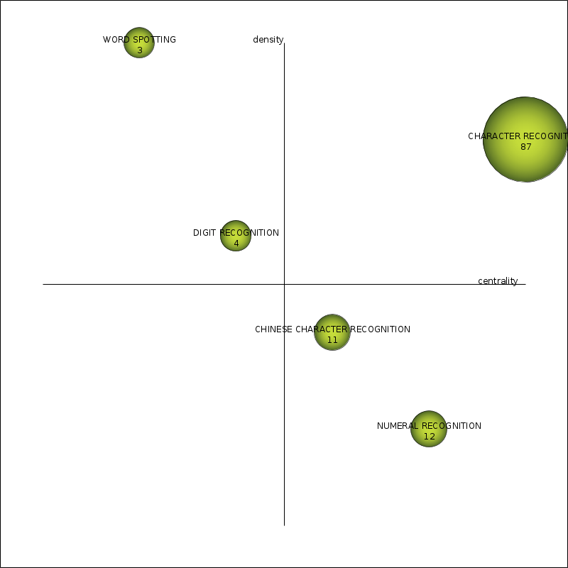
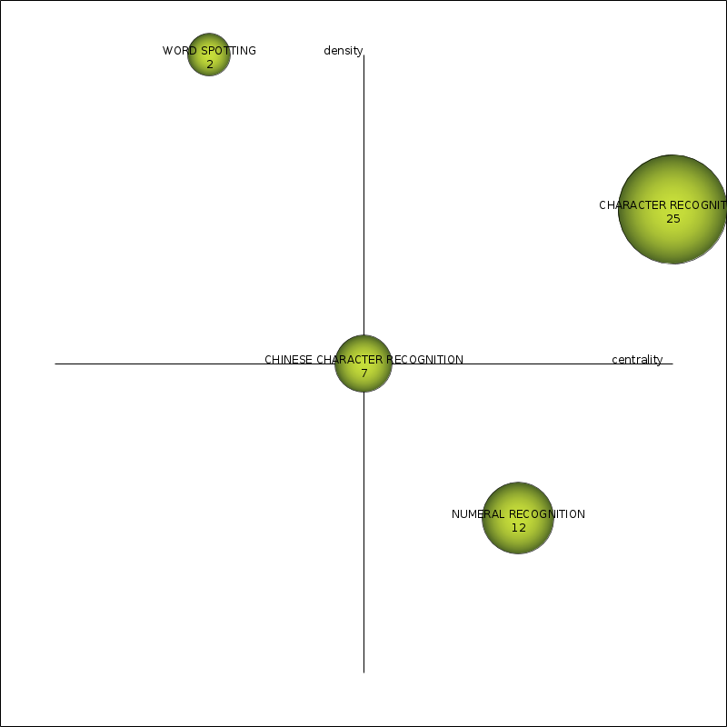
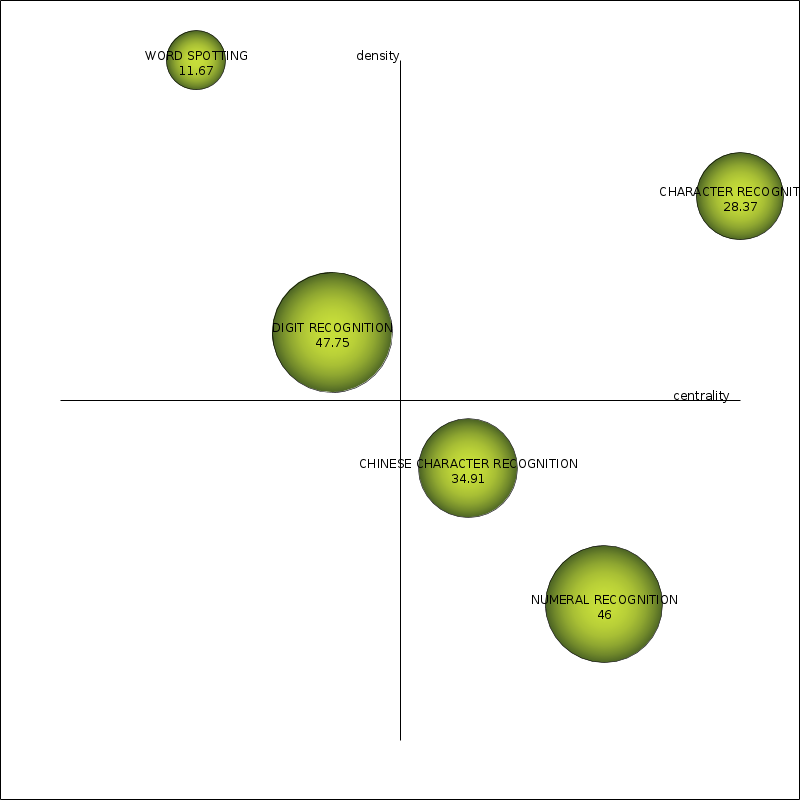
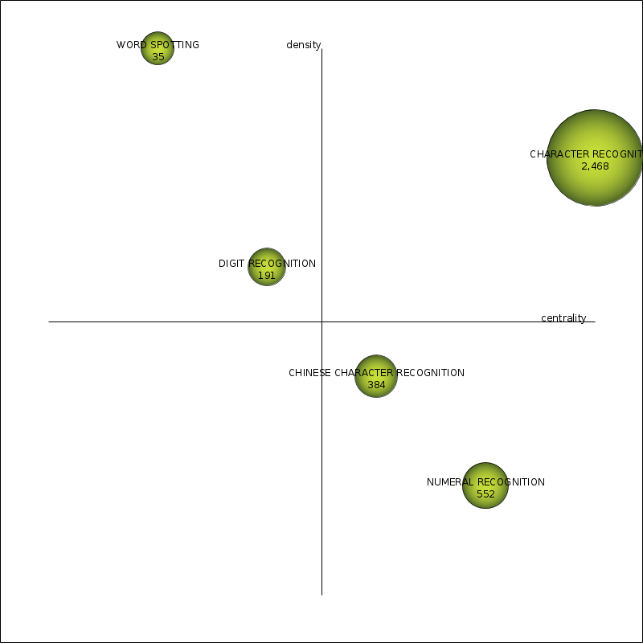
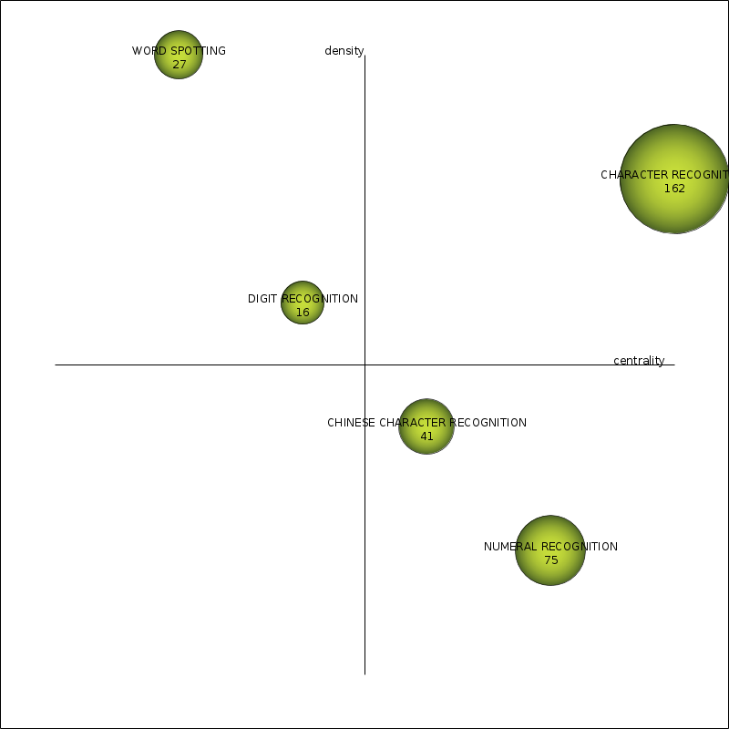
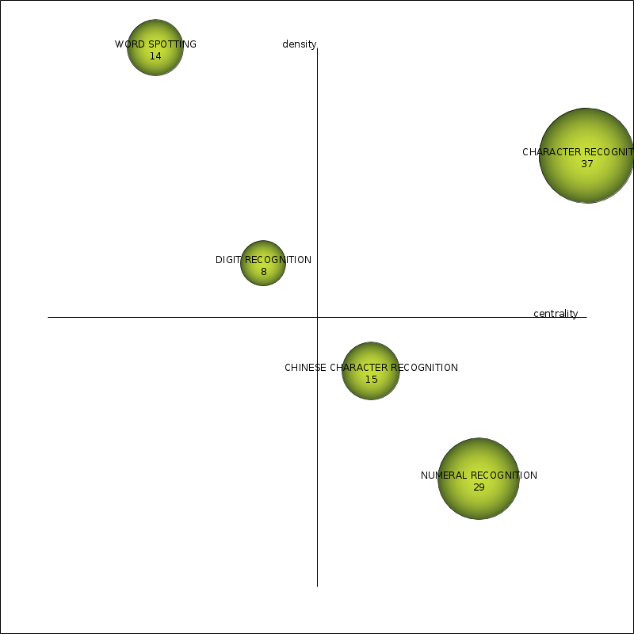
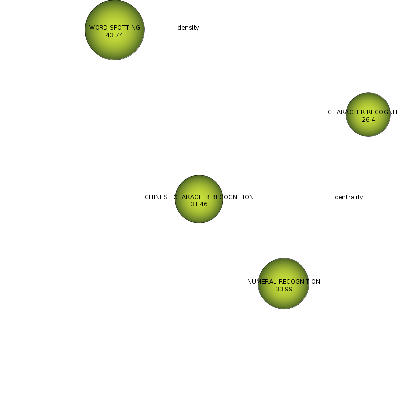
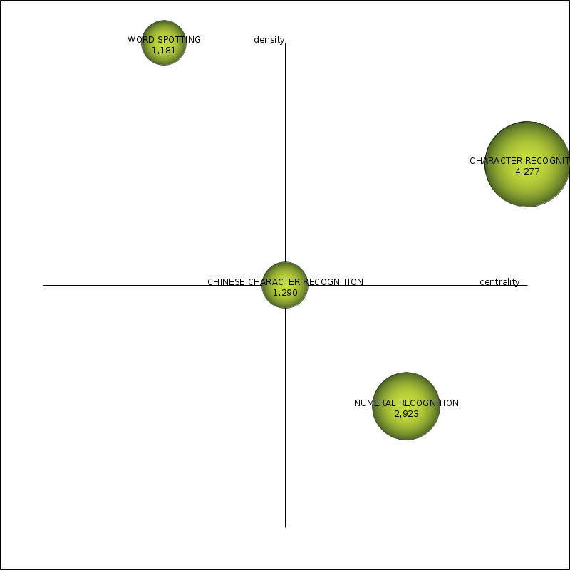
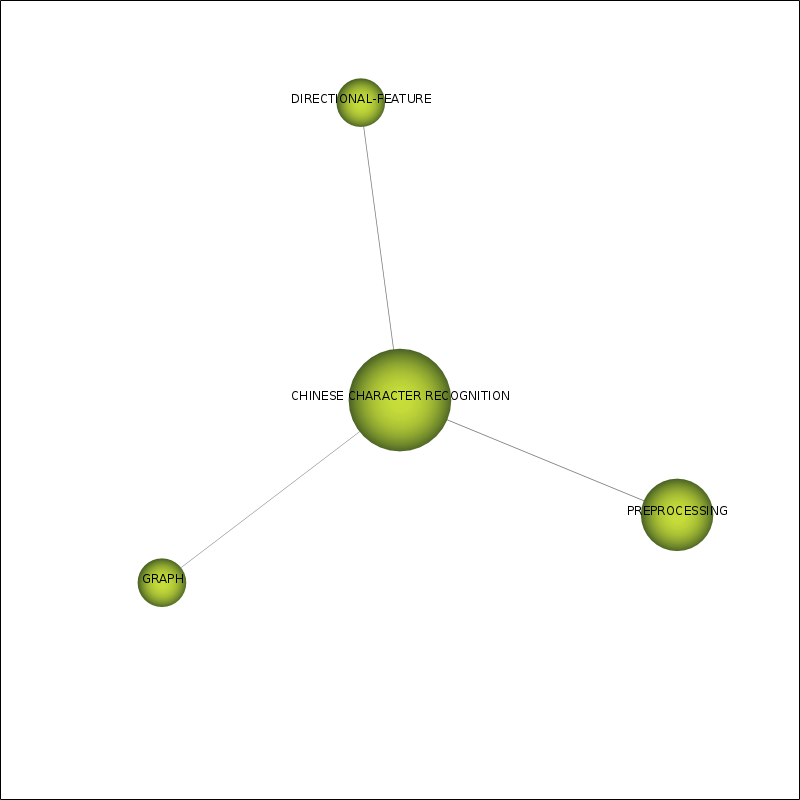

| Performance measure | Strategic diagram |
| coreDocuments-documentsCount |  |
| coreDocuments-hIndex |  |
| coreDocuments-averageCitations |  |
| coreDocuments-sumCitations |  |
| unionDocuments-documentsCount |  |
| unionDocuments-hIndex |  |
| unionDocuments-averageCitations |  |
| unionDocuments-sumCitations |  |
| Name | Centrality | Centrality range | Density | Density range |
| CHARACTER RECOGNITION | 31.93 | 1 | 11.7 | 0.8 |
| NUMERAL RECOGNITION | 13.56 | 0.8 | 2.34 | 0.2 |
| CHINESE CHARACTER RECOGNITION | 6.54 | 0.6 | 4.87 | 0.4 |
| WORD SPOTTING | 2.06 | 0.2 | 22.12 | 1 |
| DIGIT RECOGNITION | 2.77 | 0.4 | 5.45 | 0.6 |
| Name | coreDocumentsdocumentsCount | coreDocumentshIndex | coreDocumentsaverageCitations | coreDocumentssumCitations | unionDocumentsdocumentsCount | unionDocumentshIndex | unionDocumentsaverageCitations | unionDocumentssumCitations |
| CHARACTER RECOGNITION | 87 | 25 | 28.37 | 2,468 | 162 | 37 | 26.4 | 4,277 |
| NUMERAL RECOGNITION | 12 | 9 | 46 | 552 | 75 | 29 | 36.56 | 2,742 |
| CHINESE CHARACTER RECOGNITION | 11 | 7 | 34.91 | 384 | 41 | 15 | 31.46 | 1,290 |
| WORD SPOTTING | 3 | 2 | 11.67 | 35 | 27 | 14 | 43.74 | 1,181 |
| DIGIT RECOGNITION | 4 | 3 | 47.75 | 191 | 16 | 8 | 30.88 | 494 |
| Name | Cluster's network |
| CHARACTER RECOGNITION | |
| NUMERAL RECOGNITION | |
| CHINESE CHARACTER RECOGNITION |  |
| WORD SPOTTING | |
| DIGIT RECOGNITION |